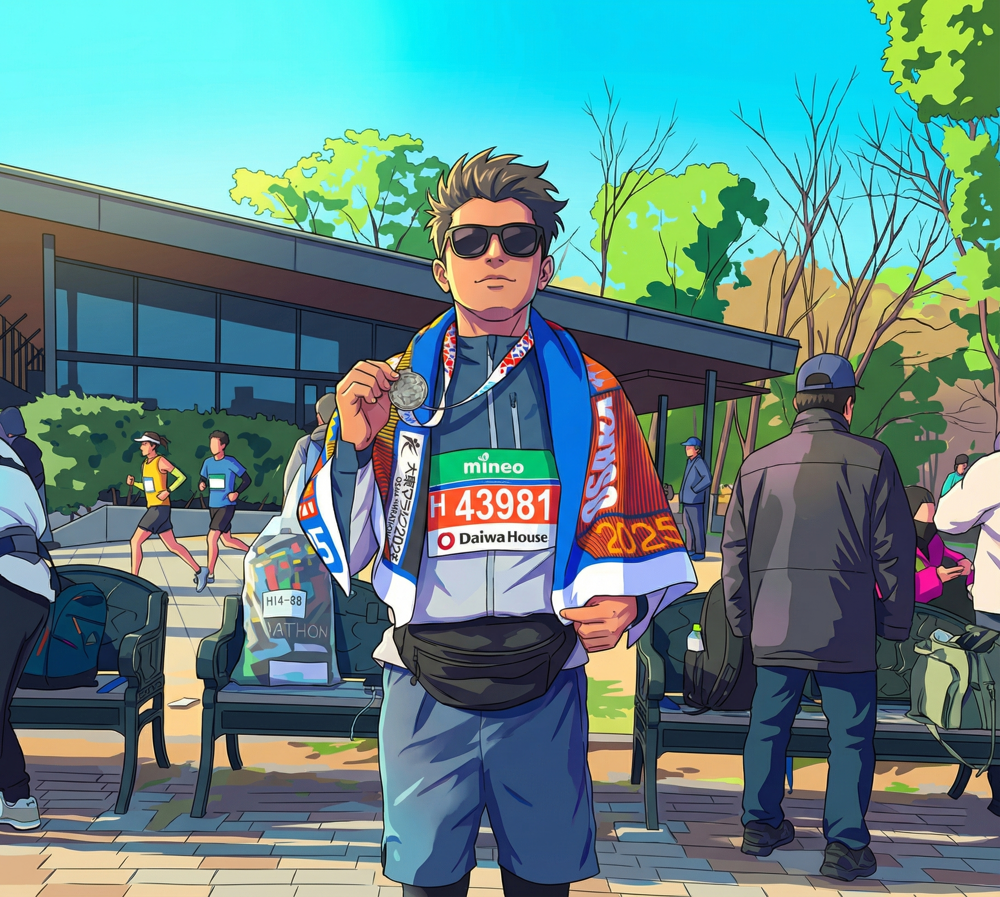

Suman Shrestha
兵庫県立福祉のまちづくり研究所の研究員であり、大阪産業大学の博士課程に在籍。
AI、センサー、ロボティクスを融合し、実世界の問題解決に取り組んでいます。
Researcher at Hyogo Prefectural Welfare-Community Development Research Institute & PhD Candidate at Osaka Sangyo University. Bridging the gap between AI theory and clinical application.

System: Online